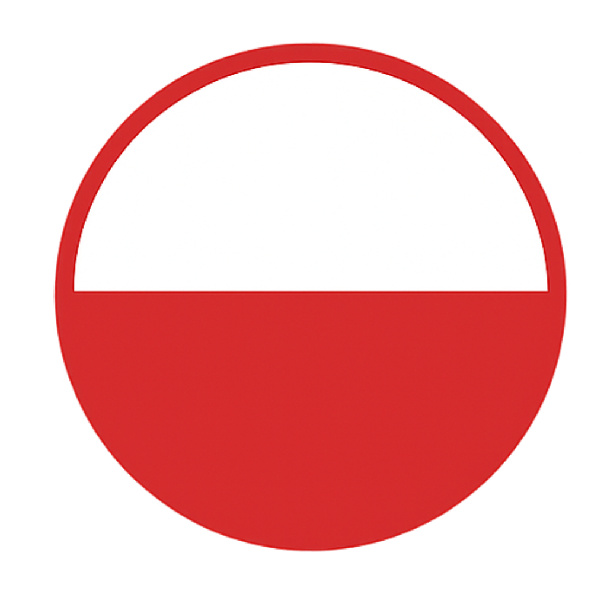
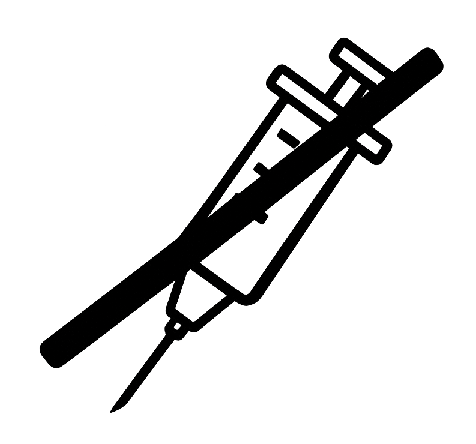

Czy wiesz, że nasze produkty są dostępne w wielu krajach na całym świecie?

Jesteśmy dostępni w: Stanach Zjednoczonych, Brazylii, Bułgarii, Danii, Finlandii, Francji, Malcie, Holandii, Norwegii, Hiszpanii, Szwecji, a także już niedługo w Niemczech i Afryce Południowej!

Produkt Polski
Kupując nasze produkty, wspierasz polską gospodarkę.
Rolnictwo Ekologiczne
Nasze produkty posiadają certyfikaty UE.

Bez Antybiotyków
Ograniczamy użycie antybiotyków do niezbędnego minimum.

- Biodrówka psia z kością
- Boczek psi bez żeber, bez skóry
- Boczek psi bez kości, ze skórą
- Golonka psia bez kości
- Golonka psia bez kości, bez skóry
- Golonka psia przednia
- Golonka psia tylna
- Golonka psia ze strzałką
- Karkówka psia bez kości
- Karkówka psia bez kości extra
- Kolanka psie
- Kości psie karkowe
- Kości psie żebrowe
- Kości psie kulinarne
- Łopatka psia bez kości extra
- Łopatka psia bez kości
- Mięsień psi czterogłowy
- Nerki psie
- Nogi psie tylne
- Ozory psie
- Pachwina psia bez skóry
- Płuca psie płaty
- Polędwiczki psie z główką
- Polędwiczki psie z główką bez warkocza
- Policzki psie
- Schab psi bez kości
- Schab psi bez kości łuskany
- Schab psi z kością łuskany
- Schab psi z kością (kotlety)
- Serca psie
- Słonina psia bez skóry
- Szynka psia bez kości
- Wątroba psia
- Żeberka psie paski extra
- Żeberka psie płaty
- Żeberka psie trójkąty bez mięsa
- Żeberka psie trójkąty z mięsem
- Biodrówka kocia z kością
- Boczek koci bez żeber, bez skóry
- Boczek koci bez kości, ze skórą
- Golonka kocia bez kości
- Golonka kocia bez kości, bez skóry
- Golonka kocia przednia
- Golonka kocia tylna
- Golonka kocia ze strzałką
- Karkówka kocia bez kości
- Karkówka kocia bez kości extra
- Kolanka kocie
- Kości kocie karkowe
- Kości kocie żebrowe
- Kości kocie kulinarne
- Łopatka kocia bez kości extra
- Łopatka kocia bez kości
- Mięsień koci czterogłowy
- Nerki kocie
- Nogi kocie tylne
- Ozory kocie
- Pachwina kocia bez skóry
- Płuca kocie płaty
- Polędwiczki kocie z główką
- Polędwiczki kocie z główką bez warkocza
- Policzki kocie
- Schab koci bez kości
- Schab koci bez kości łuskany
- Schab koci z kością łuskany
- Schab koci z kością (kotlety)
- Serca kocie
- Słonina kocia bez skóry
- Szynka kocia bez kości
- Wątroba kocia
- Żeberka kocie paski extra
- Żeberka kocie płaty
- Żeberka kocie trójkąty bez mięsa
- Żeberka kocie trójkąty z mięsem